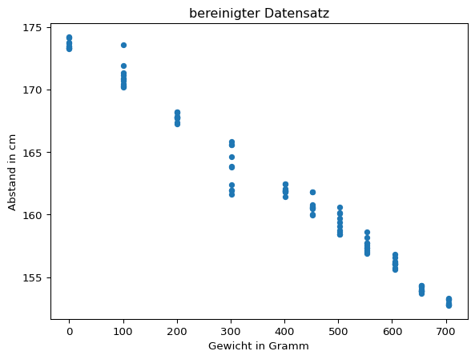
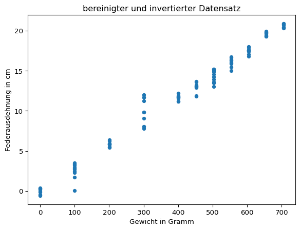
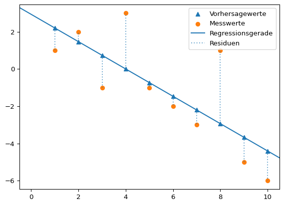

dateipfad = "01-daten/hooke_data.csv"
hooke = pd.read_csv(filepath_or_buffer = dateipfad, sep = ';')3 Lineare Parameterschätzung
Geht es in diesem Kapitel überhaupt um Kennlinien? Lineare Parameterschätzung?!
Mögliche Quellen:
- https://messtechnik-und-sensorik.org/2-kennlinien-und-messgenauigkeit/
- https://www.stssensors.com/de/characteristic-curve-hysteresis-measurement-error-terminology-in-pressure-measurement-technology/
3.1 Messreihe Hooke’sches Gesetz
Das Hooke’sche Gesetz, benannt nach dem englischen Wissenschaftler Robert Hooke, beschreibt die Beziehung zwischen der Kraft \(F\) und der Längenänderung \(\Delta{x}\) einer Feder durch die Gleichung \(F = k \times \Delta{x}\), wobei \(k\) die Federkonstante ist.
Die Federkonstante ist eine grundlegende Eigenschaft elastischer Materialien und gibt an, wie viel Kraft erforderlich ist, um eine Feder um eine bestimmte Länge zu dehnen oder zu komprimieren. Das Hooke’sche Gesetz besagt, dass die Deformation eines elastischen Körpers proportional zur aufgebrachten Kraft ist, solange die Feder nicht über den elastischen Bereich hinaus gedehnt oder gestaucht wird.
In einem Experiment wurde das Hooke’sche Gesetz überprüft. An einer an einer Halterung hängenden Metallfeder ist ein (variables) Gewicht angebracht. Darunter befindet sich in einigem Abstand ein Ultraschallsensor zur Abstandsmessung. Der Abstand zwischen der Unterseite des an der Feder befestigten Gewichts und dem Ultraschallsensor ist der gemessene Abstand.
Die Gewichte konnten mit einer Genauigkeit von \(\epsilon_{m} = 0,5 g\) mit einer Küchenwaage bestimmt werden.

Die Messreihe liegt in Form einer CSV-Datei unter dem Pfad ‘01-daten/hooke_data.csv’ vor. Die Datei wird mit Pandas eingelesen.
Deskriptive Statistik
Nach dem Einlesen sollte man sich einen Überblick über die Daten verschaffen. Mit den Methoden pd.DataFrame.head() und pd.DataFrame.tail() kann ein Ausschnitt vom Beginn und vom Ende der Daten betrachtet werden.
print(hooke.head(), "\n")
print(hooke.tail()) no mass distance
0 0 705 153.29
1 1 705 152.74
2 2 705 153.27
3 3 705 152.81
4 4 705 152.77
no mass distance
109 109 0 173.70
110 110 0 173.44
111 111 0 173.75
112 112 0 173.30
113 113 0 200.00Die Methode pd.DataFrame.describe() erstellt die deskriptive Statistik für den Datensatz. Diese ist in diesem Fall jedoch noch nicht sonderlich nützlich. Die Spalte ‘no’ enthält lediglich eine laufende Versuchsnummer, die Spalte ‘mass’ enhält verschiedene Gewichte.
hooke.describe()| no | mass | distance | |
|---|---|---|---|
| count | 114.000000 | 114.000000 | 114.000000 |
| mean | 56.561404 | 394.921053 | 162.301754 |
| std | 33.131552 | 226.237605 | 7.483767 |
| min | 0.000000 | 0.000000 | 152.740000 |
| 25% | 28.250000 | 201.000000 | 156.622500 |
| 50% | 56.500000 | 452.000000 | 160.720000 |
| 75% | 84.750000 | 605.000000 | 167.767500 |
| max | 113.000000 | 705.000000 | 200.000000 |
Sinnvoller ist eine nach dem verwendeten Gewicht aufgeteilte beschreibende Statistik der gemessenen Ausdehnung. Dafür kann die Pandas-Methode pd.DataFrame.groupby() verwendet werden. So kann für jedes der gemessenen Gewichte der arithmethische Mittelwert und die Standardabweichung abgelesen werden.
hooke.groupby(by = 'mass')['distance'].describe()| count | mean | std | min | 25% | 50% | 75% | max | |
|---|---|---|---|---|---|---|---|---|
| mass | ||||||||
| 0 | 12.0 | 175.828333 | 7.620157 | 173.27 | 173.3150 | 173.570 | 174.1125 | 200.00 |
| 100 | 11.0 | 171.044545 | 0.985833 | 170.15 | 170.3650 | 170.800 | 171.2400 | 173.56 |
| 201 | 11.0 | 167.791818 | 0.296305 | 167.26 | 167.7200 | 167.780 | 167.9750 | 168.19 |
| 301 | 10.0 | 163.710000 | 1.660977 | 161.60 | 162.0575 | 163.825 | 165.3250 | 165.86 |
| 401 | 10.0 | 161.967000 | 0.313229 | 161.42 | 161.8450 | 161.915 | 162.0250 | 162.48 |
| 452 | 10.0 | 160.713000 | 0.627854 | 159.98 | 160.4575 | 160.555 | 160.7400 | 161.83 |
| 503 | 10.0 | 159.314000 | 0.781099 | 158.43 | 158.6400 | 159.220 | 159.9650 | 160.61 |
| 554 | 10.0 | 157.547000 | 0.523791 | 156.92 | 157.2075 | 157.435 | 157.7100 | 158.60 |
| 605 | 10.0 | 156.142000 | 0.354206 | 155.62 | 156.0700 | 156.080 | 156.2075 | 156.84 |
| 655 | 11.0 | 154.022727 | 0.224414 | 153.72 | 153.8800 | 153.920 | 154.2400 | 154.35 |
| 705 | 9.0 | 153.008889 | 0.241425 | 152.74 | 152.8100 | 152.910 | 153.2700 | 153.29 |
Bereits an dieser Stelle könnte die hohe Standardabweichung in der Messreihe mit 0 Gramm auffallen. Leichter ist es jedoch in der grafischen Betrachtung.
hooke.plot(x = 'mass', y = 'distance', kind = 'scatter', title = "Messreihe Hooke`sches Gesetz", ylabel = 'Abstand in cm', xlabel = 'Gewicht in Gramm')
Grafisch fällt der Messwert von 200 cm für das Gewicht 0 Gramm als stark von den übrigen Messwerten abweichend auf.
Die Messwerte für das Gewicht 0 Gramm sollen näher betrachtet werden. Dafür werden die Messwerte sowohl absolut, als auch standardisiert in Einheiten der Standardabweichung (z-Werten) ausgedrückt ausgegeben.
Eine Variable wird standardisiert, indem von jedem Wert der Erwartungswert abgezogen und das Ergebnis durch die Standardabweichung geteilt wird.
\[ Z = \frac{x - \mu}{\sigma} \]
Da in der Regel der Erwartungswert und die Standardabweichung unbekannt sind, werden der Stichprobenmittelwert und die Stichprobenstandardabweichung verwendet. Dies nennt man Studentisieren, nach dem Pseudonym bereits im vorherigen Kapitel erwähnten William Sealy Gosset.
\[ z_{i} = \frac{x_{i} - \bar{x}}{s} \]
gewicht = 0
# z-Transformation manuell berechnen
mittelwert_ausdehnung = hooke[hooke['mass'] == gewicht].loc[: , 'distance'].mean()
standardabweichung_ausdehnung = hooke[hooke['mass'] == gewicht].loc[: , 'distance'].std(ddof = 1)
z_values = hooke[hooke['mass'] == gewicht].loc[: , 'distance'].apply(lambda x: ( (x - mittelwert_ausdehnung) /standardabweichung_ausdehnung))
z_values.name = 'z-values'
# z-Transformation mit scipy
scipy_z_values = scipy.stats.zscore(hooke[hooke['mass'] == gewicht].loc[: , 'distance'], ddof = 1)
scipy_z_values.name = 'scipy z-values'
# gemeinsame Ausgabe der Daten
print(pd.concat([hooke[hooke['mass'] == gewicht], z_values, scipy_z_values], axis = 1)) no mass distance z-values scipy z-values
102 102 0 173.32 -0.329171 -0.329171
103 103 0 174.11 -0.225498 -0.225498
104 104 0 173.42 -0.316048 -0.316048
105 105 0 174.12 -0.224186 -0.224186
106 106 0 173.30 -0.331795 -0.331795
107 107 0 174.21 -0.212375 -0.212375
108 108 0 173.27 -0.335732 -0.335732
109 109 0 173.70 -0.279303 -0.279303
110 110 0 173.44 -0.313423 -0.313423
111 111 0 173.75 -0.272742 -0.272742
112 112 0 173.30 -0.331795 -0.331795
113 113 0 200.00 3.172069 3.172069Der Wert 200 cm in Zeile 113 scheint fehlerhaft zu sein. Eine Eigendehnung der Feder um zusätzliche 16 Zentimeter ist nicht plausibel. Auch der z-Wert > 3 kennzeichnet den Messwert als Ausreißer. Die Zeile wird deshalb aus dem Datensatz entfernt.
Definition 3.1: Ausreißer
In der Statistik wird ein Messwert als Ausreißer bezeichnet, wenn dieser stark von der übrigen Messreihe abweicht. In einer Messreihe können auch mehrere Ausreißer auftreten. Diese Werte können zur Verbesserung der Schätzung aus der Messreihe entfernt werden, wenn anzunehmen ist, dass diese durch Messfehler und andere Störgrößen verursacht sind.
Eine Möglichkeit, Ausreißer zu identifizieren, ist die z-Transformation. Dabei muss ein Schwellenwert gewählt werden, ab dem ein Messwert als Ausreißer klassifiziert werden soll, bspw. 2,5 oder 3 Einheiten der Standardabweichung. In der Statistik wurde eine ganze Reihe von Ausreißertests entwickelt (siehe Ausreißertests)
Die Einstufung eines Messwerts als Ausreißer kann aber nicht allein auf der Grundlage statistischer Verfahren erfolgen, sondern ist immer eine Ermessensentscheidung auf der Grundlage Ihres Fachwissens. Denn nicht alle abweichenden Werte sind automatisch ungültig, sondern treten mit einer gewissen statistischen Wahrscheinlichkeit auf (siehe Kapitel Normalverteilung). Man spricht dann von gültigen Extremwerten.
Ausreißer von verschiedenen Autor:innen steht unter der Lizenz CC BY-SA 4.0 und ist abrufbar auf Wikipedia
hooke.drop(index = 113, inplace = True)
hooke.groupby(by = 'mass')['distance'].describe()| count | mean | std | min | 25% | 50% | 75% | max | |
|---|---|---|---|---|---|---|---|---|
| mass | ||||||||
| 0 | 11.0 | 173.630909 | 0.367409 | 173.27 | 173.3100 | 173.440 | 173.9300 | 174.21 |
| 100 | 11.0 | 171.044545 | 0.985833 | 170.15 | 170.3650 | 170.800 | 171.2400 | 173.56 |
| 201 | 11.0 | 167.791818 | 0.296305 | 167.26 | 167.7200 | 167.780 | 167.9750 | 168.19 |
| 301 | 10.0 | 163.710000 | 1.660977 | 161.60 | 162.0575 | 163.825 | 165.3250 | 165.86 |
| 401 | 10.0 | 161.967000 | 0.313229 | 161.42 | 161.8450 | 161.915 | 162.0250 | 162.48 |
| 452 | 10.0 | 160.713000 | 0.627854 | 159.98 | 160.4575 | 160.555 | 160.7400 | 161.83 |
| 503 | 10.0 | 159.314000 | 0.781099 | 158.43 | 158.6400 | 159.220 | 159.9650 | 160.61 |
| 554 | 10.0 | 157.547000 | 0.523791 | 156.92 | 157.2075 | 157.435 | 157.7100 | 158.60 |
| 605 | 10.0 | 156.142000 | 0.354206 | 155.62 | 156.0700 | 156.080 | 156.2075 | 156.84 |
| 655 | 11.0 | 154.022727 | 0.224414 | 153.72 | 153.8800 | 153.920 | 154.2400 | 154.35 |
| 705 | 9.0 | 153.008889 | 0.241425 | 152.74 | 152.8100 | 152.910 | 153.2700 | 153.29 |
Hiernach ist die höchste Standardabweichung für die Messreihe mit 301 Gramm zu verzeichnen. Die gemessenen Werte sind jedoch unauffällig.
gewicht = 301
z_values = scipy_z_values = scipy.stats.zscore(hooke[hooke['mass'] == gewicht].loc[: , 'distance'], ddof = 1)
z_values.name = 'z-values'
print(pd.concat([hooke[hooke['mass'] == gewicht], z_values], axis = 1)) no mass distance z-values
70 70 301 162.38 -0.800734
71 71 301 161.93 -1.071658
72 72 301 161.95 -1.059617
73 73 301 161.60 -1.270337
74 74 301 164.59 0.529809
75 75 301 165.86 1.294419
76 76 301 163.82 0.066226
77 77 301 163.83 0.072247
78 78 301 165.57 1.119823
79 79 301 165.57 1.119823Die Grafik des bereinigten Datensatzes legt einen linearen Zusammenhang nahe. Darüber hinaus sticht der mit zunehmendem Gewicht abfallende Trend der Datenpunkte ins Auge.
hooke.plot(x = 'mass', y = 'distance', kind = 'scatter', title = 'bereinigter Datensatz', ylabel = 'Abstand in cm', xlabel = 'Gewicht in Gramm')
Entsprechend des Versuchsaufbaus nimmt mit zunehmender Dehnung der Feder der Abstand zum Abstandssensor ab. Da die Federausdehnung gemessen werden soll, bietet es sich an, die Daten entsprechend zu transformieren. Dazu wird der gemessene Abstand bei 0 Gramm Gewicht als Nullpunkt aufgefasst, von dem aus die Federdehnung gemessen wird. Das bedeutet, dass von allen Datenpunkten das arithmetische Mittel der für 0 Gramm Gewicht gemessen Ausdehnung abgezogen und das Ergebnis mit -1 multipliziert wird.
nullpunkt = hooke[hooke['mass'] == 0].loc[: , 'distance'].mean()
print(f"Nullpunkt: {nullpunkt:.2f} cm")
hooke['distance'] = hooke['distance'].sub(nullpunkt).mul(-1)
hooke.plot(x = 'mass', y = 'distance', kind = 'scatter', title = 'bereinigter und invertierter Datensatz', ylabel = 'Federausdehnung in cm', xlabel = 'Gewicht in Gramm')Nullpunkt: 173.63 cm
Mit der Funktion plt.errorbars() können die Mittelwerte und Standardfehler für jedes Gewicht grafisch dargestellt werden. Da die Standardfehler eher klein sind, werden mit dem Parameter capsize horizontale Linien am Ende des Fehlerbalkens eingezeichnet.
# Mittelwerte nach Gewicht
distance_means_by_weight = hooke['distance'].groupby(by = hooke['mass']).mean()
distance_means_by_weight.name = 'Federausdehnung'
# Standardfehler nach Gewicht
distance_stderrors_by_weight = hooke['distance'].groupby(by = hooke['mass']).std(ddof = 1).div(np.sqrt(hooke['distance'].groupby(by = hooke['mass']).size()))
distance_stderrors_by_weight.name = 'Standardfehler'
hooke.plot(x = 'mass', y = 'distance', kind = 'scatter', title = 'bereinigter und invertierter Datensatz', ylabel = 'Federausdehnung in cm', xlabel = 'Gewicht in Gramm', alpha = 0.6)
errorbar_container = plt.errorbar(
x = distance_means_by_weight.index, y = distance_means_by_weight, yerr = distance_stderrors_by_weight,
linestyle = 'none', marker = 'x', color = 'black', markersize = 12, elinewidth = 3, ecolor = 'red', capsize = 12)
# siehe: https://matplotlib.org/stable/api/container_api.html#matplotlib.container.ErrorbarContainer
plt.legend([errorbar_container.lines[0], errorbar_container.lines[2][0]],
['Mittelwert', 'Standardfehler'],
loc = 'upper left')
plt.show()
print(pd.concat([distance_means_by_weight, distance_stderrors_by_weight], axis = 1))
Federausdehnung Standardfehler
mass
0 -7.751375e-15 0.110778
100 2.586364e+00 0.297240
201 5.839091e+00 0.089339
301 9.920909e+00 0.525247
401 1.166391e+01 0.099052
452 1.291791e+01 0.198545
503 1.431691e+01 0.247005
554 1.608391e+01 0.165637
605 1.748891e+01 0.112010
655 1.960818e+01 0.067663
705 2.062202e+01 0.0804753.2 Federkonstante bestimmen
Die Beziehung zwischen der Kraft \(F\) und der Längenänderung \(\Delta{x}\) einer Feder mit Federkonstante \(k\) wird durch die Gleichung \(F = k \times \Delta{x}\) beschrieben. Dabei entspricht die Kraft \(F\) dem mit der Fallbeschleunigung \(g\) multiplizierten Gewicht in Kilogramm \(m\). Die Fallbeschleunigung beträgt auf der Erde \(9,81 \frac{m}{s^2}\).
Deshalb wird im Datensatz das in der Spalte ‘mass’ eingetragene Gewicht in Gramm in die wirkende Kraft umgerechnet. Ebenso wird die gemessene Abstandsänderung in der Spalte ‘distance’ von Zentimeter in Meter umgerechnet.
hooke['mass'] = hooke['mass'].div(1000).mul(9.81)
hooke.rename(columns = {'mass': 'force'}, inplace = True)
hooke['distance'] = hooke['distance'].div(100)
print(hooke.head()) no force distance
0 0 6.91605 0.203409
1 1 6.91605 0.208909
2 2 6.91605 0.203609
3 3 6.91605 0.208209
4 4 6.91605 0.208609Für die grafische Darstellung des Zusammenhangs \(F = k \times \Delta{x}\) ist es zweckmäßiger, die Abstandsänderung auf der x-Achse und die wirkende Kraft auf der y-Achse darzustellen.
hooke.plot(x = 'distance', y = 'force', kind = 'scatter', title = 'umgeformter Datensatz', ylabel = 'wirkende Kraft in $N$', xlabel = 'Abstandsänderung in Meter')Lineare Ausgleichsrechnung
Die Ausgleichsrechnung (oder auch Parameterschätzung) ist eine Methode, um für eine Messreihe die unbekannten Parameter des zugrundeliegenden physikalischen Modells zu schätzen. Das Ziel besteht darin, eine (in diesem Fall lineare) Funktion zu bestimmen, die bestmöglich an die Messdaten angepasst ist. (Wikipedia)
Eine lineare Funktion wird durch die Konstante \(\beta_0\), den Schnittpunkt mit der y-Achse, und den Steigungskoeffizienten \(\beta_1\) bestimmt.
\[ y = \beta_0 + \beta_1 \times x \]
In der Regel liegt kein deterministischer Zusammenhang vor, sondern es treten zufällige Abweichungen auf, die mit dem additiven Fehlerterm ausgedrückt und aus dem Englischen error mit \(e_i\) notiert werden. Diese Fehler werden Residuen genannt.
\[ y = \beta_0 + \beta_1 \times x + e_i \]
Zur Bestimmung der Parameter einer linearen Funktion wird die Methode der kleinsten Quadrate verwendet.
Die Herleitung der Formeln sind viel LaTeX (Skript MB: 73- 74)
Quelle: Skript MB S. 71-74
Beispiel 3.1: Methode der kleinsten Quadrate
Mit der Methode der kleinsten Quadrate soll diejenige Gerade \(\hat{y} = \beta_0 + \beta_1 \times x\) gefunden werden, die die quadrierten Abstände der Vorhersagewerte \(\hat{y}\) von den tatsächlich gemessenen Werten \(y\) minimiert. Die Werte \(y_i - \hat{y_i}\) sind die Residuen \(e_i\). Es gilt also:
\[ \sum_{i=1}^{N}(y_i - \hat{y_i})^2 = \sum_{i=1}^{N} e_i = \min \]
Grafisch kann man sich die Minimierung der quadrierten Abstände so vorstellen.

Regressionskoeffizienten: [ 2.93333333 -0.73333333]x = np.arange(1, 11)
y = - x.copy() + 4
y[0] -= 2
y[2] -= 2
y[3] += 3
y[-3] += 5
lm = poly.polyfit(x, y, 1)
vorhersagewerte = poly.polyval(x, lm)
plt.scatter(x, vorhersagewerte, label = 'Vorhersagewerte', marker = "^", color = "tab:blue")
plt.scatter(x, y, label = 'Messwerte', marker = 'o', color = "tab:orange")
plt.axline(xy1 = (0, lm[0]), slope = lm[1], label = "Regressionsgerade", color = "tab:blue")
dotted = plt.vlines(x, ymin = vorhersagewerte, ymax = y, alpha = 0.6, ls = 'dotted', label = 'Residuen')
plt.legend()
plt.show()
print("Regressionskoeffizienten:", lm)
Die eingezeichnete Gerade entspricht der linearen Funktion \(\hat{y} = \beta_0 + \beta_1 \times x + e_i\). Die Dreiecksmarker sind die Vorhersagewerte \(\hat{y_i}\) des linearen Modells für die Werte \(x_i = np.arange(1, 11)\). Die tatsächlichen Messwerte \(y\) sind mit Kreismarkern markiert. Die Länge der gestrichelten Linien entspricht der Größe der Abweichung zwischen den Mess- und Vorhersagewerten \(y_i - \hat{y_i}\), also den Residuen \(e_i\).
Gesucht wird diejenige Gerade, die die Summe der quadrierten Residuen minimiert. Die gesuchten Werte \(\beta_0\) und \(\beta_1\) sind die Kleinst-Quadrate-Schätzer.
\[ \beta_0 = \bar{y} - \beta_1 \cdot \bar{x} \]
\[ \beta_1 = { \sum_{i=1}^n (x_i- \bar{x}) \cdot (y_i - \bar{y}) \over \sum_{i=1}^n (x_i - \bar{x})^2 } \]
Die Funktionen dafür stellen sowohl das Paket numpy.polynomial bzw. für Polynomfunktionen dessen Modul numpy.polynomial.polynomial als auch das Modul scipy.stats.linregress bereit. Im Folgenden wird die Berechnung mit NumPy gezeigt und anschließend die Funktionen aus dem Modul SciPy vorgestellt. Die Funktionsweise beider Module ist ähnlich.
NumPy polyfit und polyeval
import numpy.polynomial.polynomial as polyZur Schätzung von Funktionsparametern nach der Methode der kleinsten Quadrate wird die Funktion poly.polyfit(x, y, deg) verwendet. x sind die Werte der unabhängigen Variablen, y die Werte der abhängigen Variablen und deg spezifiziert den Grad der gesuchten Polynomfunktion. deg = 1 spezifiziert eine lineare Funktion.
Beispiel 3.2: polyfit und polyeval erklärt
# Beispieldaten erzeugen
x = np.array(list(range(0, 100)))
y = x ** 2
print(poly.polyfit(x, y, 1))[-1617. 99.]Die Funktion gibt die geschätzten Regressionsparameter als NumPy-Array zurück. Die Terme sind aufsteigend angeordnet, d. h. der Achsabschnitt steht an Indexposition 0, der Steigungskoeffizient an Indexposition 1. Die Ausgabe für ein Polynom zweiten Grades würde beispielsweise so aussehen:
print(poly.polyfit(x, y, 2))[3.15891594e-13 1.90464004e-14 1.00000000e+00]Mit den Regressionskoeffizienten können die Vorhersagewerte der linearen Funktion berechnet werden. Dafür wird die Funktion poly.polyeval(x, c) verwendet. Diese berechnet die Funktionswerte für in x übergebene Wert(e) mit den Funktionsparametern c. Aus der Differenz der gemessenen Werte und der Vorhersagewerte können die Residuen bestimmt werden.
# 'manuelle' Berechnung
regressions_koeffizienten = poly.polyfit(x, y, 1)
vorhersagewerte = regressions_koeffizienten[0] + x * regressions_koeffizienten[1]
residuen = y - vorhersagewerte
# Berechnung mit polyeval
lm = poly.polyfit(x, y, 1)
vorhersagewerte_polyval = poly.polyval(x, lm)
print("Die Ergebnisse stimmen überein:", np.equal(vorhersagewerte, vorhersagewerte_polyval).all())
print("\nAusschnitt der Vorhersagewerte:", vorhersagewerte[:10])Die Ergebnisse stimmen überein: True
Ausschnitt der Vorhersagewerte: [-1617. -1518. -1419. -1320. -1221. -1122. -1023. -924. -825. -726.]Das Bestimmtheitsmaß \(R^2\) gibt an, wie gut die Schätzfunktion an die Daten angepasst ist. Der Wertebereich reicht von 0 bis 1. Ein Wert von 1 bedeutet eine vollständige Anpassung. Für eine einfache lineare Regression mit nur einer erklärenden Variable kann das Bestimmtheitsmaß als Quadrat des Bravais-Pearson-Korrelationskoeffizienten \(r\) berechnet werden. Dieser wird mit der Funktion np.corrcoef(x, y) ermittelt (die eine Matrix der Korrelationskoeffizienten ausgibt).
print(f"r = {np.corrcoef(x, y)[0, 1]:.2f}")
print(f"R\u00b2 = {np.corrcoef(x, y)[0, 1] ** 2:.2f}")r = 0.97
R² = 0.94Die Daten und die geschätzte Gerade können grafisch dargestellt werden.
import matplotlib.pyplot as plt
plt.scatter(x, y, label = 'Beispieldaten')
plt.plot(x, vorhersagewerte, label = 'Vorhersagewerte')
plt.annotate("$R^2$ = {:.2f}".format(np.corrcoef(x, y)[0, 1] ** 2), (max(x) * 0.9, 1))
plt.title(label = 'Beispieldaten und geschätzte Linearfunktion')
plt.xlabel('x-Werte')
plt.ylabel('y-Werte')
plt.legend()
plt.show()NumPy umfasst außerdem die inzwischen veralteten Funktionen np.polyfit(x, y, deg) und np.polyval(p, x).
Beispiel 3.3: np.polyfit & np.polyval
Die Funktionen np.polyfit(x, y, deg) und np.polyval(p, x) funktionieren wie die vorgestellten Funktionen aus dem Modul numpy.polynomial.polynomial. Ein wichtiger Unterschied besteht jedoch darin, dass die Parameter der Funktion polyfit in umgekehrter Reihenfolge ausgegeben werden.
print(poly.polyfit(x, y, deg = 1))
print(np.polyfit(x, y, deg = 1))[-1617. 99.]
[ 99. -1617.]
Hinweis
This forms part of the old polynomial API. Since version 1.4, the new polynomial API defined in numpy.polynomial is preferred. A summary of the differences can be found in the transition guide.
Die Parameter der an die Messwerte angepassten linearen Funktion und das Bestimmtheitsmaß lauten:
print(poly.polyfit(hooke['distance'], hooke['force'], 1))
print(f"r = {np.corrcoef(hooke['distance'], hooke['force'])[0, 1]:.2f}")
print(f"R\u00b2 = {np.corrcoef(hooke['distance'], hooke['force'])[0, 1] ** 2:.2f}")[ 0.05753159 33.01899551]
r = 0.99
R² = 0.99Mit den Regressionskoeffizienten können die Vorhersagewerte der linearen Funktion berechnet werden.
# Berechnung mit polyeval
lm = poly.polyfit(hooke['distance'], hooke['force'], 1)
vorhersagewerte_hooke = poly.polyval(hooke['distance'], lm)Die Messreihe und die darauf angepasste lineare Funktion können grafisch dargestellt werden.
Hier mal überlegen: Die lineare Funktion kennt keine Grenzen, aber die gemessene Abstandsänderung kann nicht (sinnvoll) kleiner als Null werden. Grafisch ist plt.axline() ggf. nicht so optimal.
# Platzhalter x & y
x = hooke['distance']
y = hooke['force']
# Plot erstellen
plt.scatter(x, y, label = 'Messdaten')
plt.axline(xy1 = (0, lm[0]), slope = lm[1], label = 'Regressionsgerade\ny = ' + "{beta_0:.3f}".format(beta_0 = lm[0]) + ' + ' + "{beta_1:.3f} ".format(beta_1 = lm[1]) + 'x' )
plt.annotate("$R^2$ = {:.2f}".format(np.corrcoef(x, y)[0, 1] ** 2), (max(x) * 0.9, 1))
plt.title(label = 'Messdaten und geschätzte Linearfunktion')
plt.xlabel('gemessene Abstandsänderung in m')
plt.ylabel('wirkende Kraft')
plt.legend()
plt.grid()
plt.show()Messabweichung quantifizieren
Für den geschätzten Regressionskoeffizienten kann für die lineare Regression mit einer erklärenden Variable der Standardfehler des Regressionskoeffizienten \(SE = \hat{\sigma}_\hat{\beta_1}\) ermittelt werden (siehe Wikipedia).
\[ SE = \sqrt{\frac{\frac{1}{n-2} \sum_{i=1}^{n} (y_i - \hat{y}_i)^2}{ \sum_{i=1}^{n} (x_i - \bar{x})^2}} \]
- Im Zähler steht die mittlere Residuenquadratsumme (Summe der quadrierten Residuen / Anzahl der Freiheitsgrade).
- Im Nenner steht die Summe der Abweichungsquadrate von \(x\).
Für ein Signifikanzniveau \(\alpha\) kann ein Konfidenzniveau \(1 - \alpha\) angegeben werden als:
\[ \hat{\beta_1} \pm SE \times t_{1-\alpha / 2} ~ (n - 2) \]
- \(t_{1-\alpha / 2} ~ (n - 2)\) ist der Wert der t-Verteilung mit 2 Freiheitsgraden bzw. der Rückgabewert der Funktion:
scipy.stats.t.ppf(q = 1 - alpha/2, df = n - 2)für die obere Intervallgrenze.
print(f"Regressionskoeffizient: {lm[1]:.4f}")
# 'manuell' Standardfehler des Regressionskoeffizienten berechnen
standardfehler_beta_1 = np.sqrt( (1 / (len(x) - 2) * sum((y - vorhersagewerte_hooke) ** 2)) / sum( (x - x.mean()) ** 2 ))
print(f"Standardfehler des Regressionskoeffizienten: {standardfehler_beta_1:.4f}")
# Signifikanzniveau (alpha-Niveau) 1 - 95 % wählen
alpha = 0.05
n = len(x)
t_wert = scipy.stats.t.ppf(q = 1 - alpha/2, df = n - 2)
print(f"t-Wert 95-%-Intervall (zweiseitig): {t_wert:.4f}")
print(f"Konfidenzintervall 95%: {lm[1]:.4f} ± {t_wert:.4f} * {standardfehler_beta_1:.4f}")
print(f"untere 95-%-Intervallgrenze: {lm[1] - t_wert * standardfehler_beta_1:.4f}")
print(f"obere 95-%-Intervallgrenze: {lm[1] + t_wert * standardfehler_beta_1:.4f}")Regressionskoeffizient: 33.0190
Standardfehler des Regressionskoeffizienten: 0.3784
t-Wert 95-%-Intervall (zweiseitig): 1.9816
Konfidenzintervall 95%: 33.0190 ± 1.9816 * 0.3784
untere 95-%-Intervallgrenze: 32.2692
obere 95-%-Intervallgrenze: 33.7688Das Konfidenzintervall kann auch grafisch dargestellt werden.
geht das nicht einfacher?! Das Konfidenzintervall mit plt.fill_between() endet bei max(x), die Regressionsgerade ist aber kontinuierlich. Man müsste mit np.linspace() x-Werte erzeugen, für diese mit poly.polyval(x, lm[0]) y-Werte erzeugen und plotten. Dabei müssten die Grenzen des Plots aus einem vorherigen plot-Aufruf abgegriffen und fest gesetzt werden.
# Platzhalter x & y
x = hooke['distance']
y = hooke['force']
# Plot erstellen
plt.scatter(x, y, label = 'Messdaten')
plt.axline(xy1 = (0, lm[0]), slope = lm[1], label = 'Regressionsgerade\ny = ' + "{beta_0:.3f}".format(beta_0 = lm[0]) + ' + ' + "{beta_1:.3f} ".format(beta_1 = lm[1]) + 'x' )
plt.annotate("$R^2$ = {:.2f}".format(np.corrcoef(x, y)[0, 1] ** 2), (max(x) * 0.9, 1))
# 95-%-Konfidenzintervall einzeichnen
## poly.polyval(hooke['distance'], [lm[0]])
beta1_lower_boundary = lm[1] - (t_wert * standardfehler_beta_1)
beta1_upper_boundary = lm[1] + (t_wert * standardfehler_beta_1)
y_lower_boundary = poly.polyval(hooke['distance'], [lm[0], beta1_lower_boundary])
y_upper_boundary = poly.polyval(hooke['distance'], [lm[0], beta1_upper_boundary])
plt.fill_between(x = x, y1 = y_lower_boundary , y2 = y_upper_boundary, alpha = 0.3, label = '95-%-Konfidenzintervall $\\beta_1$')
plt.title(label = 'Messdaten und geschätzte Linearfunktion im 95-%-Intervall')
plt.xlabel('gemessene Abstandsänderung in m')
plt.ylabel('wirkende Kraft')
plt.legend()
plt.grid()
plt.show()Das Modul SciPy
Die Funktion scipy.stats.lingress(x, y) liefert mit einem Funktionsaufruf zahlreiche Rückgabewerte:
- Steigung der Regressionsgerade,
- y-Achsenschnittpunkt der Regressionsgerade,
- Bravais-Pearson-Korrelationskoeffizient r,
- p-Wert der Nullhypothese, dass die Steigung der Regressionsgerade Null ist,
- Standardfehler der Steigung und
- Standardfehler des y-Achsenschnittpunkts.
Der Standardfehler des y-Achsenschnittpunkts ist nur verfügbar, wenn die Rückgabewerte in einem Objekt gespeichert werden. Die Rückgabewerte können dann als Attribute abgerufen werden.
# Zuweisung mehrerer Objekte
slope, intercept, rvalue, pvalue, slope_stderr = scipy.stats.linregress(x, y)
print(f"y = {intercept:.4f} + {slope:.4f} * x\n",
f"r = {rvalue:.4f} R2 = {rvalue ** 2:.4f} p = {pvalue:.4f}\n",
f"Standardfehler des Anstiegs: {slope_stderr:.4f}", sep = '')
# Zuweisung eines Objekts
lm = scipy.stats.linregress(x, y)
print("\n", lm, sep = '')
print(f"y-Achsenschnittpunkt: {lm.intercept:.4f}\nStandardfehler des y-Achsenschnittpunkts:{lm.intercept_stderr:.4f}")y = 0.0575 + 33.0190 * x
r = 0.9928 R2 = 0.9856 p = 0.0000
Standardfehler des Anstiegs: 0.3784
LinregressResult(slope=np.float64(33.01899550918018), intercept=np.float64(0.05753158907970102), rvalue=np.float64(0.9927907555799099), pvalue=np.float64(4.115211719827619e-104), stderr=np.float64(0.37837320019327897), intercept_stderr=np.float64(0.0506707972676925))
y-Achsenschnittpunkt: 0.0575
Standardfehler des y-Achsenschnittpunkts:0.0507So kann mit dem entsprechenden t-Wert das Konfidenzintervall berechnet werden.
alpha = 0.05
n = len(x)
print(f"{slope - scipy.stats.t.ppf(q = 1 - alpha / 2, df = n - 2) * slope_stderr:.3f} ≤ {slope:.3f} ≤ {slope + scipy.stats.t.ppf(q = 1 - alpha / 2, df = n - 2) * slope_stderr:.3f}")32.269 ≤ 33.019 ≤ 33.769Ergebnis Federkonstante
Die Federkonstante des Versuchaufbaus liegt mit 95 prozentiger Sicherheit im Intervall zwischen 32.27 und 33.77. Die Punktschätzung für die Federkonstante beträgt 33.02.
Aufgabe könnte sein, das Konfidenzintervall 99-Prozent zu berechnen.
–> Dann muss man aber nur eine Zahl ändern
3.3 Resterampe - Größtfehler?!
Siehe Musterbericht WA S. 12-13
Der Größtfehler quantifiziert den ungünstigsten Fall, bei dem sich alle möglichen Fehlerquellen addieren.
- grobe Fehler: falscher Versuchsaufbau, ungeeignete Messgeräte, falsches Ablesen, Unachtsamkeit –> betroffene Werte streichen und Messung Wiederholen
Der Größtfehler \(\Delta x\) setzt sich zusammen aus dem systematischen Fehler und dem zufälligen Fehler.
- systematische Fehler: Fehler der Messgeräte, der Art der Messung (bspw. Genauigkeit Abstandssenor)
- das ist die Küchenwaage, deren systematischer Fehler auf \(\frac{g}{\Delta x} = \frac{9.81}{\Delta x}\) ? Was ist Delta-x, die Ausdehnung?!
- Die Masse wäre 705g –> müsste die Messungenauigkeit der Küchenwaage mit 0.5 g nicht ins Verhältnis zu 705 g gesetzt werden?
- das ist die Küchenwaage, deren systematischer Fehler auf \(\frac{g}{\Delta x} = \frac{9.81}{\Delta x}\) ? Was ist Delta-x, die Ausdehnung?!
- zufällige Fehler: Streuung von Messwerten um Erwartungswert –> statistischer Charakter der Fehler
Durch Umstellen nach der Federkonstante \(k\) kann diese wie folgt ermittelt werden:
\[ k = \frac{m \times g}{\Delta{x}} \]